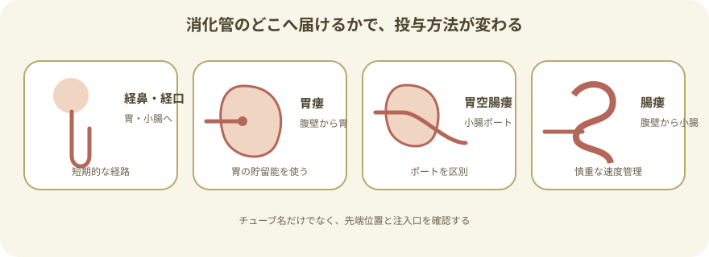
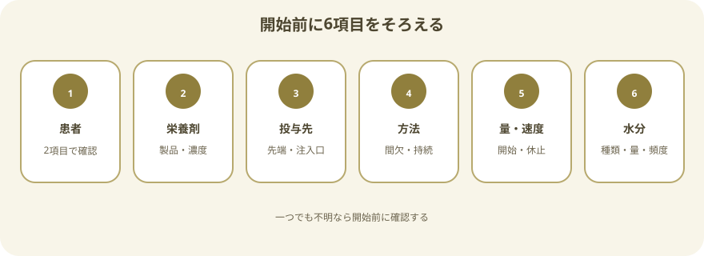
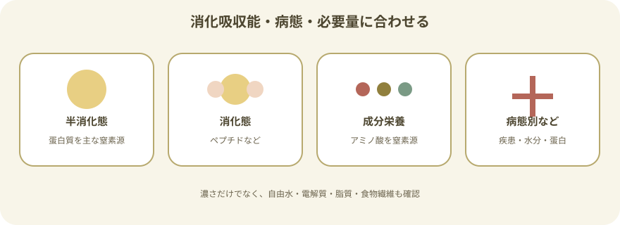
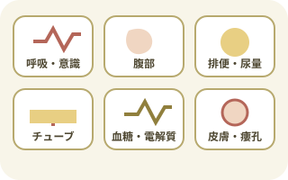
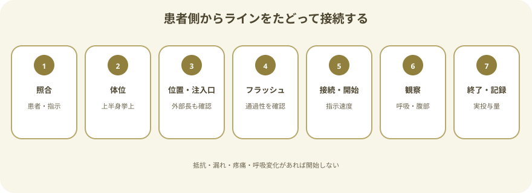
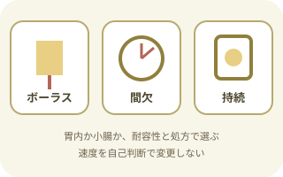
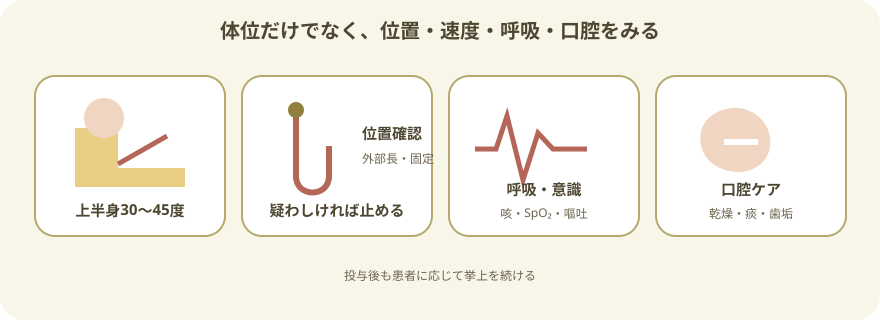
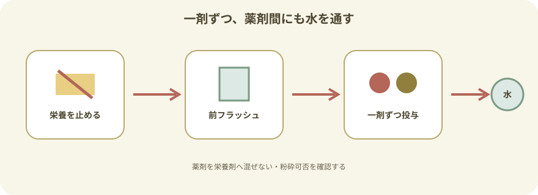
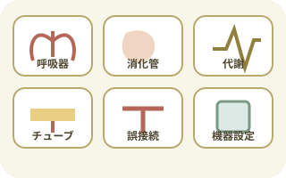
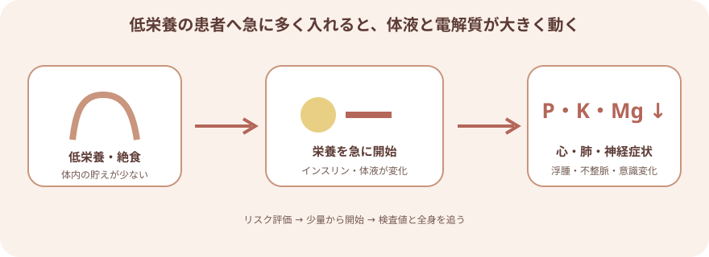

経管栄養とは

- 経鼻・経口チューブ：鼻または口から胃、十二指腸、空腸へ留置する
- 胃瘻：腹壁から胃へ造設した瘻孔を使う
- 胃空腸瘻・腸瘻：胃を越えて小腸へ投与する
- 胃内投与：胃の貯留能を利用でき、間欠・ボーラス・持続などが選ばれる
- 幽門後投与：小腸へ直接入るため、一般にポンプによる持続投与など慎重な速度管理が必要になる
投与指示で確認する6項目

開始前に声に出して照合
- 患者：氏名・生年月日など2つ以上の識別情報
- 栄養剤：製品、濃度、アレルギー、使用期限、保存・開封条件
- 投与先：胃か小腸か、チューブ種類、正しい栄養注入口
- 方法：ボーラス、間欠、持続、重力滴下、ポンプ
- 量・速度：1回量、時間量、開始・増量方法、休止条件
- 水分：フラッシュに使う水、1回量、頻度、24時間総量
栄養剤の種類

- 半消化態・標準的な製剤：蛋白質を主な窒素源とし、消化機能が保たれている場合に広く使われる
- 消化態：ペプチドなど、より分解された窒素源を含む
- 成分栄養：アミノ酸を窒素源とし、脂質が少ない製剤などがある
- 病態別・高濃度・高蛋白など：疾患、体液管理、必要量に合わせて選択される
濃度が高いほど優れているわけではない。栄養量だけでなく、自由水、電解質、食物繊維、脂質、薬剤との相互作用も確認する。
投与前の観察

前回投与からの変化をみる
- 意識・呼吸：咳、痰、呼吸数、SpO₂、誤嚥徴候
- 腹部：膨満、疼痛、悪心・嘔吐、腸蠕動
- 排泄：排便・排ガス、下痢、便秘、尿量
- チューブ：種類、先端位置、固定、外部長、屈曲、閉塞、接続
- 代謝：血糖、体重、水分出納、Na・K・Mg・P、腎機能
- 皮膚・瘻孔：発赤、漏れ、出血、疼痛、肉芽
必要物品と準備
- 指示された経腸栄養剤
- 経腸栄養専用の投与セット・バッグ
- 経腸栄養用シリンジ
- 指示されたフラッシュ用の水
- 必要時、経腸栄養ポンプ
- 延長チューブ・接続アダプタ
- 手袋、清拭物品、廃棄物袋
- ラベル、記録用紙または端末
- 必要時、血糖測定・SpO₂測定物品
清潔な作業面で準備する
- 手指衛生を行い、容器・接続部へ触れる回数を減らす。
- 開封・調製時刻、患者、製品、量を表示する。
- 保存、開封後の使用時間、投与セット交換は製品表示と院内基準に従う。
- 残った栄養剤へ新しい栄養剤を継ぎ足さない。
- 冷蔵品は製品表示に従って扱い、電子レンジなどで不均一に加温しない。
投与の手順

- 患者・指示・栄養剤を照合する
投与先、方法、量、速度、フラッシュ、血糖測定や休止条件まで確認する。
- 説明し、上半身を起こす
禁忌がなければ30～45度を目安に上半身を挙上する。ずり落ちや圧迫を防ぎ、呼吸と腹部を観察できる体位にする。
- チューブ位置と注入口を確認する
外部長、固定、屈曲、患者症状を確認する。胃瘻・胃空腸瘻では各ポートの役割を確認し、栄養注入口を選ぶ。
- 指示された水でフラッシュする
抵抗、疼痛、漏れがないか確認する。水の種類と量は年齢、水分制限、チューブ径・先端位置、製品に合わせる。
- 専用コネクタで接続して開始する
投与セットを患者側からたどり、静脈・気道・ドレーンへつながっていないことを確認。指示速度で開始する。
- 投与中の反応を観察する
呼吸、意識、悪心・嘔吐、逆流、腹痛・膨満、下痢、機器アラーム、接続・漏れを確認する。
- 終了後にフラッシュして記録する
指示量の水でチューブ内を清潔に保ち、キャップを閉じる。実投与量と水分量、反応を記録する。
前回投与からの間隔を一律に「最低2時間」とはしない。投与方法、胃排出、先端位置、患者の耐容性、処方時刻に従う。
投与方法の違い

胃の貯留能と患者の耐容性で選ぶ
- ボーラス：シリンジなどで一定量を比較的短時間に投与
- 間欠：重力滴下やポンプで一定時間かけ、休止時間を設ける
- 持続：ポンプなどで長時間、一定速度で投与
- 幽門後・空腸投与は、急速なボーラスを避けて持続投与が選ばれることが多い
- 開始・増量・減量・休止は自己判断で変えず、指示を確認する
滴下数の計算では、投与セットの滴下係数を必ず製品表示で確認する。ポンプ使用時も、予定量と実投与量、バッグ残量を人の目で照合する。
誤嚥を防ぐ観察と体位

- 投与中は、禁忌がなければ上半身30～45度挙上を目安にする。
- 投与後も患者の状態と投与方法に応じて挙上を続け、直後の仰臥位を避ける。
- 鎮静、意識低下、咳嗽低下、嘔吐、逆流、腹部膨満は誤嚥リスクを高める。
- 咳、湿性嗄声、ゴロゴロした呼吸音、SpO₂低下、頻呼吸、発熱を観察する。
- 胃内容残量だけで耐容性を判断せず、腹部、排便、嘔吐、呼吸、全身状態を合わせてみる。
- 食べていなくても口腔ケアを続け、乾燥、痰、舌苔、歯垢を減らす。
薬剤をチューブから投与するとき

投与前に薬剤師へ確認
- チューブ投与が可能な薬剤・剤形か
- 徐放錠、腸溶錠、舌下錠など粉砕してはいけない製剤ではないか
- 胃内・空腸内で吸収や作用が変わらないか
- 栄養剤との相互作用により、投与前後の休止が必要か
- 簡易懸濁法の可否、温度、時間、使用する水、チューブ径
- 栄養投与を止め、位置を確認
正しい患者、薬剤、投与時刻、経路、チューブ先端位置、注入口を確認する。
- 前フラッシュ
指示量の水でチューブ内の栄養剤を流し、通過性を確認する。
- 一剤ずつ投与
複数薬剤をまとめたり栄養剤へ混ぜたりせず、一剤ごとに投与する。
- 薬剤間・投与後にフラッシュ
薬剤同士の混合と閉塞を防ぐ。栄養再開時刻は薬剤ごとの指示に従う。
合併症と観察

症状を原因につなげてみる
- 呼吸器：逆流、誤嚥、誤嚥性肺炎
- 消化管：悪心・嘔吐、膨満、腹痛、下痢、便秘
- 代謝：高・低血糖、脱水、過剰水分、電解質異常
- チューブ：閉塞、移動、抜去、破損、瘻孔周囲漏れ
- 接続・機器：誤接続、設定間違い、投与不足・過量
下痢を栄養剤だけのせいにしない
- 抗菌薬、下剤、ソルビトール含有薬、感染、便塞栓、投与速度、栄養剤の汚染を確認する。
- 回数、量、性状、開始時期、腹痛・発熱、薬剤変更との関係を記録する。
- 栄養剤を自己判断で薄めたり、急に中止・変更したりしない。
再栄養症候群

開始前にリスクを確認
- 著しい低体重や最近の大きな体重減少
- 長期間ほとんど食べていない
- 開始前からリン、カリウム、マグネシウムが低い
- アルコール多飲、吸収障害、がん治療、利尿薬など
- 開始量・増量速度、ビタミン・電解質補充は医師・管理栄養士・薬剤師と計画する。
- リン、K、Mg、血糖、体重、水分出納、浮腫を経時的に確認する。
- 浮腫、呼吸困難、頻脈・不整脈、筋力低下、意識変化、けいれんを直ちに報告する。
チューブ・機器の異常
閉塞時に強く押し込まない
- クランプ、屈曲、接続、チューブ外部長、ポンプ設定を確認する。
- 抵抗や疼痛、瘻孔周囲漏れがあれば注入を止める。
- 小容量シリンジで強く加圧しない。
- スタイレットやガイドワイヤを閉塞解除に使わず、再挿入しない。
- 閉塞解除は製品の電子添文と院内手順に従う。
抜けた・位置が変わった
- 栄養剤、水、薬剤の投与を止める。
- 自分で押し戻さない。
- 瘻孔から抜けた場合は造設時期と抜去時刻を確認し、速やかに報告する。
- 患者の呼吸、腹痛、出血、漏れを観察し、再確認・再留置に備える。
すぐに投与を止めて報告する変化
- 激しい咳、呼吸困難、SpO₂低下、チアノーゼ、意識変化
- 繰り返す嘔吐、栄養剤の逆流、誤嚥が疑われる
- 強い腹痛、腹部硬直、著明な膨満、消化管出血
- チューブの外部長変化、抜去、破損、接続外れ
- 瘻孔周囲の大量漏れ、出血、急な激痛
- 不整脈、呼吸悪化、浮腫、筋力低下など再栄養症候群を疑う変化
- ポンプ設定間違い、過量投与、静脈・気道・ドレーンへの誤接続が疑われる
記録と申し送り
- チューブ種類、先端位置、注入口、外部長、固定・瘻孔状態
- 栄養剤名、濃度、予定量、実投与量、投与方法・速度、開始・終了時刻
- フラッシュに使った水と量、薬剤と投与時刻
- 体位、呼吸、腹部症状、排便、血糖、水分出納、検査値
- 中断した時間と理由、未投与量、再開条件
- 異常、報告時刻、報告先、指示、対応後の変化